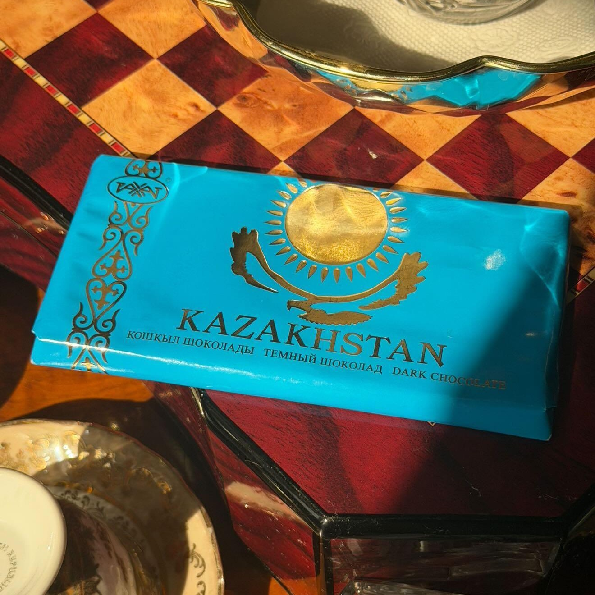
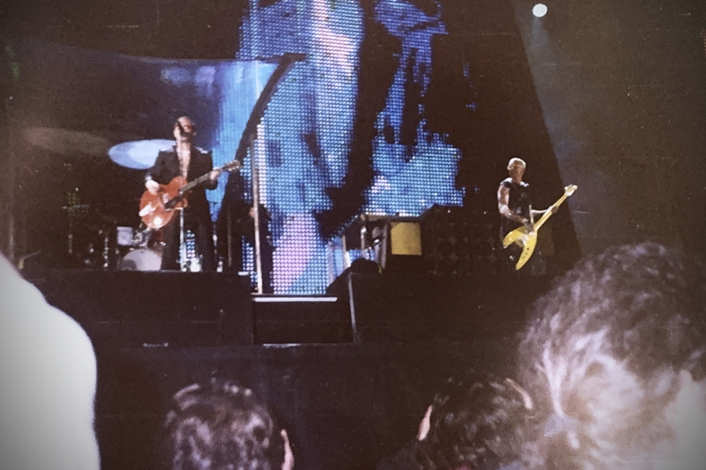
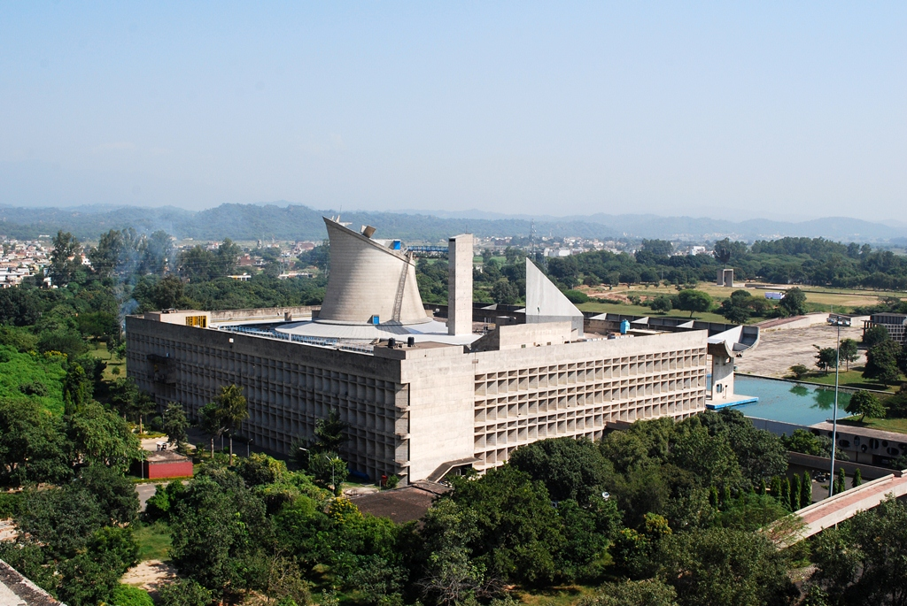

Main Page
From today's featured article
{kind=link}
Mary Mallon (September 23, 1869 – November 11, 1938), dubbed Typhoid Mary, was an Irish-born cook who lived in the US and is believed to have infected up to 57 people with the bacteria that cause typhoid fever, with three confirmed deaths. Between 1897 and 1907, Mallon worked at several homes; residents at four of them contracted typhoid. In 1907, she was forcibly quarantined at Riverside Hospital, but was freed in 1910, promising not to work as a cook. A further outbreak at the Sloane Maternity Hospital, where she was working, resulted in 25 cases and two deaths in early 1915. She was again confined, remaining so until her death in 1938. Her nickname became a term for anyone who spreads disease. Mallon's case raises questions about the balance between individual liberty and public health. No other carrier of typhoid was confined for as long as she was. Her story has been reevaluated, particularly during outbreaks of HIV/AIDS, tuberculosis, and COVID-19. (Full article...)
- Alison Frantz
- Early Netherlandish painting
- Misti
Did you know ...
.jpg){kind=link}

- ... that amendments to Kazakhstan's law on state symbols raised concerns over changes to the packaging of one of Lotte Rakhat's most popular products (pictured)?
- ... that a promotion for the Jackie Robinson commemorative coins included a baseball card issued by the United States government?
- ... that "Candidatus Magnetoglobus multicellularis", unlike almost all other known prokaryotes, spends its entire life cycle as a multicellular organism?
- ... that Leona E. Prasse's 1972 Feininger catalogue, which involved the help of the subject's widow, was called an improvement over a previous Feininger book from 1959?
- ... that the dinosaur that laid the eggs identified as Umbellaoolithus is unknown, but it ate plants?
- ... that only a shoe and a backpack were found after Makan Nasiri was killed in the 2026 Minab school attack?
- ... that a story in I Became the Main Role of a BL Drama was published as a script because there were not enough pages or time to include it as a full comic?
- ... that "Pistol Nell" earned her nickname by helping to thwart a bank robbery?
- ... that Billy Bragg ate Joe Hill's ashes?
In the news
.jpg){kind=link}
- An attack on a police complex in Kohat, Pakistan, leaves at least 31 people dead.
- The tilcayo (pictured), a new species of tiger cat, is formally identified.
- Former leader of Kosovo Hashim Thaçi is sentenced to 25 years in prison for war crimes during his leadership of the Kosovo Liberation Army.
- At the Primetime Emmy Awards, Widow's Bay wins Outstanding Comedy Series, and The Pitt wins Outstanding Drama Series.
On this day
September 23: Celebrate Bisexuality Day
.jpg){kind=link}

- 1803 – Maratha troops were defeated by forces of the British East India Company at the Battle of Assaye, one of the decisive battles of the Second Anglo-Maratha War.
- 1884 – The French steamship Arctique ran aground on the northern coast of Cape Virgenes in Argentina; gold was discovered during the rescue effort, triggering the Tierra del Fuego Gold Rush.
- 1983 – Flying from Pakistan, Gulf Air Flight 771 was blown up by the Abu Nidal Organization while on approach over the United Arab Emirates, killing all 112 people on board.
- 1997 – Irish rock band U2 performed in Sarajevo (pictured), the first major artist to hold a concert in the city since the end of the Bosnian War.
- 2016 – Following a number of high-profile sexual assaults, major reforms were enacted to strengthen laws related to rape in Germany.
- Eleonora Gonzaga (b. 1598)
- Émilie Gamelin (d. 1851)
- Omar Ali Saifuddien III (b. 1914)
- Ray Charles (b. 1930)
- September 22
- September 23
- September 24
From today's featured list
{kind=link}

There are 117 constituencies of the Punjab Legislative Assembly, the unicameral legislature of Punjab, a state in North India. The seat of the Punjab Legislative Assembly is at Chandigarh, the state capital. It is housed within the Chandigarh Capitol Complex (building pictured), a World Heritage Site designed by Le Corbusier. The 117 members of the state legislative assembly are directly elected from single-seat constituencies and sit for a term of five years, unless it is dissolved early. Punjab is the nineteenth-largest state in India, and the fifteenth-most populous, with a population of 27.7 million in 2011. Thirty-four seats in the assembly are reserved for the Scheduled Castes (SC), which have been given reservation status since Indian independence, guaranteeing them political representation. (Full list...)
- Humphrey Bogart on stage, screen, radio, and television
- Glossary of sound laws in the Indo-European languages
- Canadian National Skating Championships
Today's featured video
|
The Adventures of Prince Achmed is a German animated fairy-tale film, written and directed by Lotte Reiniger, and released on 23 September 1926. Since two earlier Quirino Cristiani films are lost, it is the oldest surviving animated feature film. The plot is based on elements from several One Thousand and One Nights stories, such as "Aladdin," "Ahmed and Paribanou", and "The Ebony Horse". The film features a silhouette-animation technique that Reiniger invented by manipulating cardboard cutouts and thin sheets of lead under a camera, similar to wayang shadow puppets. The original prints featured color tinting. Reiniger also used the first form of a multiplane camera in making the film, one of the most important devices in pre-digital animation. Several famous avant-garde animators worked on Prince Achmed, among them Walter Ruttmann, Berthold Bartosch, and Carl Koch. Film credit: Lotte Reiniger
Recently featured:
|
Other areas of Wikipedia
- Community portal – The central hub for editors, with resources, links, tasks, and announcements.
- Village pump – Forum for discussions about Wikipedia itself, including policies and technical issues.
- Site news – Sources of news about Wikipedia and the broader Wikimedia movement.
- Teahouse – Ask basic questions about using or editing Wikipedia.
- Help desk – Ask questions about using or editing Wikipedia.
- Reference desk – Ask research questions about encyclopedic topics.
- Content portals – A unique way to navigate the encyclopedia.
Wikipedia's sister projects
Wikipedia is written by volunteer editors and hosted by the Wikimedia Foundation, a non-profit organization that also hosts a range of other volunteer projects:
-
 Commons
Commons
Free media repository -
MediaWiki
Wiki software development -
Meta-Wiki
Wikimedia project coordination -
 Wikibooks
Wikibooks
Free textbooks and manuals -
Wikidata
Free knowledge base -
Wikifunctions
Catalog of computer functions -
Wikiquote
Collection of quotations -
Wikisource
Free-content library -
Wikispecies
Directory of species -
Wikiversity
Free learning tools -
Wikivoyage
Free travel guide -
Wiktionary
Dictionary and thesaurus
{kind=link}
{kind=link}
{kind=link}
{kind=link}
{kind=link}
{kind=link}
{kind=link}
Wikipedia languages
This Wikipedia is written in English. Many other Wikipedias are available; some of the largest are listed below.
-
1,000,000+ articles
- العربية
- Deutsch
- Español
- فارسی
- Français
- Italiano
- Nederlands
- 日本語
- Polski
- Português
- Русский
- Svenska
- Українська
- Tiếng Việt
- 中文
-
250,000+ articles
- Bahasa Indonesia
- Bahasa Melayu
- Bân-lâm-gú
- Български
- Català
- Čeština
- Dansk
- Eesti
- Ελληνικά
- Esperanto
- Euskara
- עברית
- Հայերեն
- 한국어
- Magyar
- Norsk bokmål
- Română
- Simple English
- Slovenčina
- Srpski
- Srpskohrvatski
- Suomi
- Türkçe
- Oʻzbekcha
-
50,000+ articles
- Asturianu
- Azərbaycanca
- বাংলা
- Bosanski
- کوردی
- Frysk
- Gaeilge
- Galego
- Hrvatski
- ქართული
- Kurdî
- Latviešu
- Lietuvių
- മലയാളം
- Македонски
- မြန်မာဘာသာ
- Norsk nynorsk
- ਪੰਜਾਬੀ
- Shqip
- Slovenščina
- ไทย
- తెలుగు
- اردو